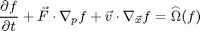
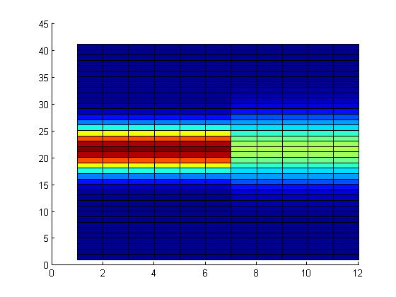

Contents
1D Boltzmann Equation
Numerical solution of the boltzmann equation to recover Euler macroscopic continuum solution. By Manuel Diaz
Boltzmann Trasnport Equation:

clc; clear all; close all;
Simulation Parameters
CFL = 0.8; % CFL condition tEnd = 0.1; % Out time theta = 0; % for FD = -1, MB = 0, BE = +1 quad = 1; % for NC = 1 , GH = 2 advec = 1; % for TVD = 1, WENO5 = 2
Space Discretization
L = [0 1]; % Physical domain Length H = [0 0]; % Physical domain Height D = [0 0]; % Physical domain Depth lx = 12; % number of nodes ly = 12; % number of nodes lz = 12; % number of nodes dx = (L(2)-L(1))/(lx-1); % delta x dy = (H(2)-H(1))/(ly-1); % delta y dz = (D(2)-D(1))/(lz-1); % delta z x = L(1):dx:L(2); y = H(1):dy:H(2); z = D(1):dz:D(2);
Velocity Discretization:
switch quad case{1} % Newton Cotes Quadrature: V = [-10,10]; % range: a to b lv = 40; % nodes desired (may not the actual value) [v,w,k] = cotes_xw(V(1),V(2),lv,5); % cotes Degree 5 case{2} % Gauss Hermite Quadrature: lv = 20; % nodes desired (the actual value) [v,w] = GaussHermite(lv); % for integrating range: -inf to inf k = 1; % quadrature constant. otherwise error('Order must be between 1 and 2'); end
Velocity-Space Grid:
The actual lv and lx value will be computed using 'lenght' vector function:
clear lv; lv = length(v); clear lx; lx = length(x); [nv,nx] = meshgrid(1:lv,1:lx); % get coordinate of matrix indices % Initialize Arrays u = zeros(lv,lx); t = zeros(lv,lx); r=zeros(lv,lx); v = v*ones(1,lx); w = w*ones(1,lx); f = zeros(lv,lx); feq = zeros(lv,lx); fnext = zeros(lv,lx);
Initial Conditions
Macroscopic Velocity, Temperature and Fugacity
% Left side: u(1:lv,1:lx/2) = 0; % velocity t(1:lv,1:lx/2) = 4.383850; % temperature r(1:lv,1:lx/2) = 0.2253353; % fugacity % Right side: u(1:lv,lx/2+1:lx) = 0; % velocity t(1:lv,lx/2+1:lx) = 8.972544; % temperature r(1:lv,lx/2+1:lx) = 0.1204582; % fugacity
Distribution function:
Compute initial Equilibrium distribution function:
feq = 1 ./ ( exp( (v-u).^2 ./ t) ./ r + theta );
% Plot initial Equilibrium function:
surface(feq)
 Recover Initial Macroscopic Properties:
Using Quadrature rules to integrate for:
n = k*sum(w .* feq); % Number density u = k*sum(v .* w .* feq); % Macrospic velocity in x E = k*sum(1/2*( v.^2 ).* w .* feq); % Energy % Plot Macroscopic Properties of feq: % plot(x,n,x,u,x,E)
Advection Scheme
By negleting any force field acting over our domian, The Boltzmann equation would resemble to a pure advection equation. Thus we use WENO or TVD subroutine to compute the advection of the information in the grid:
switch advec case{1} %TVD case{2} %WENO5 otherwise error('Order must be between 1 and 2'); end
Recover Macroscopic Properties:
Using Quadrature rules to integrate for:
n = k*sum(w .* feq); % Number density u = k*sum(v .* w .* feq); % Macrospic velocity in x E = k*sum(1/2*( v.^2 ).* w .* feq); % Energy % Plot Macroscopic Properties of feq: % plot(x,n,x,u,x,E)